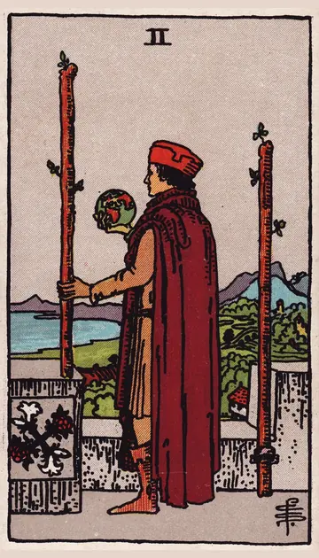

正位置ワンドの2の正位置
キーワード：計画・展望・次の一歩
恋愛
二人の将来を思い描き、次の一歩を考える時です。
相手の気持ちあなたとの将来を、考え始めているようです。
この先思い描いた未来に、少しずつ近づいていきそうです。
アドバイスどんな関係になりたいか、具体的に思い描いてみましょう。
気をつけること考えるばかりで、動くタイミングを逃さないように。
この先思い描いた未来に、少しずつ近づいていきそうです。
アドバイスどんな関係になりたいか、具体的に思い描いてみましょう。
気をつけること考えるばかりで、動くタイミングを逃さないように。
人間関係
関係をどう広げていくか、考え始める時です。
相手の気持ちあなたとの関係を、もっと広げたいと感じているようです。
この先視野が広がり、新しい縁が生まれそうです。
アドバイス新しいつながりをどう広げたいか、考えてみましょう。
気をつけること今の関係に満足して、視野が狭くならないように。
この先視野が広がり、新しい縁が生まれそうです。
アドバイス新しいつながりをどう広げたいか、考えてみましょう。
気をつけること今の関係に満足して、視野が狭くならないように。
仕事・学業
次の目標を定め、計画を立てるのに向いた時期です。
この先立てた計画が、次のチャンスにつながりそうです。
アドバイス長期的な目標を立て、今日の一歩を決めましょう。
気をつけること計画を大きくしすぎて、足元がおろそかにならないように。
アドバイス長期的な目標を立て、今日の一歩を決めましょう。
気をつけること計画を大きくしすぎて、足元がおろそかにならないように。
お金
お金の計画を立てるのに、向いた時です。
この先計画が、将来の安心につながりそうです。
アドバイス半年先までの収支を、ざっくり考えましょう。
気をつけること大きすぎる目標で、無理をしないように。
アドバイス半年先までの収支を、ざっくり考えましょう。
気をつけること大きすぎる目標で、無理をしないように。
生活
これからの暮らしを、思い描く時です。
この先理想の暮らしに、一歩ずつ近づけそうです。
アドバイス住まいや毎日の過ごし方の理想を、書き出してみましょう。
気をつけること計画ばかりで、行動が遅れないように。
アドバイス住まいや毎日の過ごし方の理想を、書き出してみましょう。
気をつけること計画ばかりで、行動が遅れないように。
今日の運勢
先の予定を考えるのに向いた日です。
この先楽しみな予定が決まりそうです。
アドバイス今週や今月の予定を見直してみましょう。
気をつけること先のことを心配しすぎないように。
アドバイス今週や今月の予定を見直してみましょう。
気をつけること先のことを心配しすぎないように。
逆位置ワンドの2の逆位置
キーワード：迷い・計画倒れ・先の不安
恋愛
先が見えず、不安を感じやすい時です。
相手の気持ちあなたとの将来について、迷いがあるようです。
この先小さな一歩を重ねれば、先が見えてきそうです。
アドバイス遠い未来より、まず近い予定を一緒に決めてみましょう。
気をつけること不安から、相手に答えを急がせないように。
この先小さな一歩を重ねれば、先が見えてきそうです。
アドバイス遠い未来より、まず近い予定を一緒に決めてみましょう。
気をつけること不安から、相手に答えを急がせないように。
人間関係
今の関係に、物足りなさを感じやすい時です。
相手の気持ちあなたとの関係を、このままでいいのか考えているようです。
この先新しい刺激が、関係に変化をもたらしそうです。
アドバイス期待しすぎず、今の関係の良さも見つけましょう。
気をつけること周りと比べて、焦らないように。
この先新しい刺激が、関係に変化をもたらしそうです。
アドバイス期待しすぎず、今の関係の良さも見つけましょう。
気をつけること周りと比べて、焦らないように。
仕事・学業
計画が思いどおりに進まない時期です。
この先計画を練り直せば、再び進み始めそうです。
アドバイス計画を小さく区切り直してみましょう。
気をつけること準備不足のまま、大きく動かないように。
アドバイス計画を小さく区切り直してみましょう。
気をつけること準備不足のまま、大きく動かないように。
お金
お金の計画が、思うように進まない時です。
この先練り直せば、また進み始めそうです。
アドバイス計画を、小さく区切り直しましょう。
気をつけること焦って、大きな決断をしないように。
アドバイス計画を、小さく区切り直しましょう。
気をつけること焦って、大きな決断をしないように。
生活
暮らしの先行きが見えず、不安になりやすい時です。
この先近い予定が決まれば、落ち着きそうです。
アドバイスまずは来週の予定から、整えましょう。
気をつけること周りの暮らしと比べすぎないように。
アドバイスまずは来週の予定から、整えましょう。
気をつけること周りの暮らしと比べすぎないように。
今日の運勢
予定が決まらず、落ち着かない日です。
この先迷っていた予定が、自然と決まりそうです。
アドバイス決められることから、一つずつ決めましょう。
気をつけること予定を詰め込みすぎないように。
アドバイス決められることから、一つずつ決めましょう。
気をつけること予定を詰め込みすぎないように。
このページの文章は、アプリ「ひとやすみタロット」の結果に使っている文章です。アプリでは、あなたの相談や、カードが出た位置（今の状況・これからの流れ・アドバイス）に合わせて、この中から文章を選びます。逆位置の読み方は逆位置のことをご覧ください。
「ワンドの2」が出たら、あなたの相談ではどう読む？
アプリでは、質問への答えに合わせて、カードの言葉をあなたの相談に合わせて届けます。
Android 対応・会員登録なし